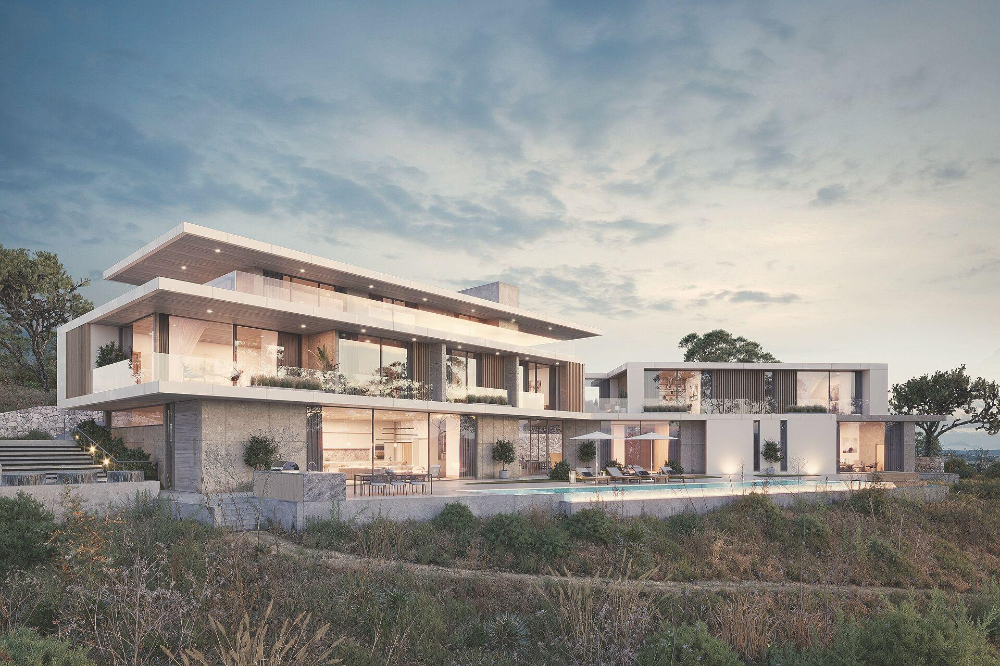
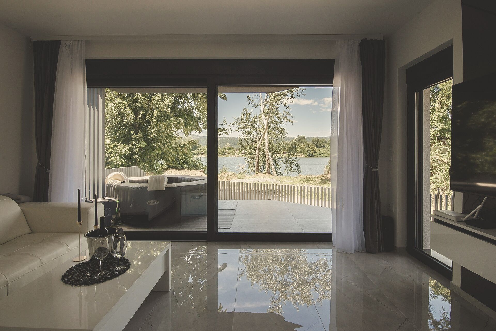
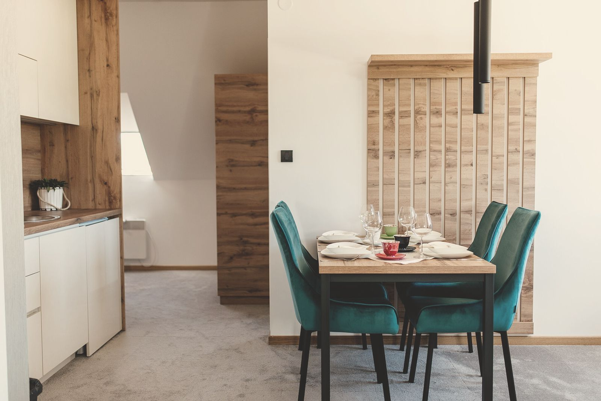
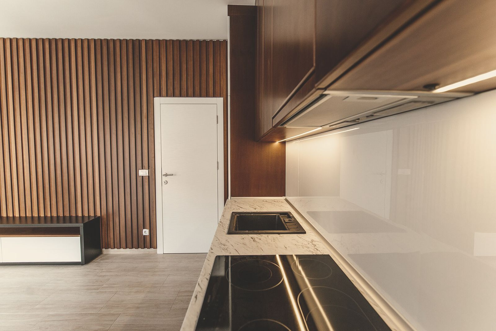
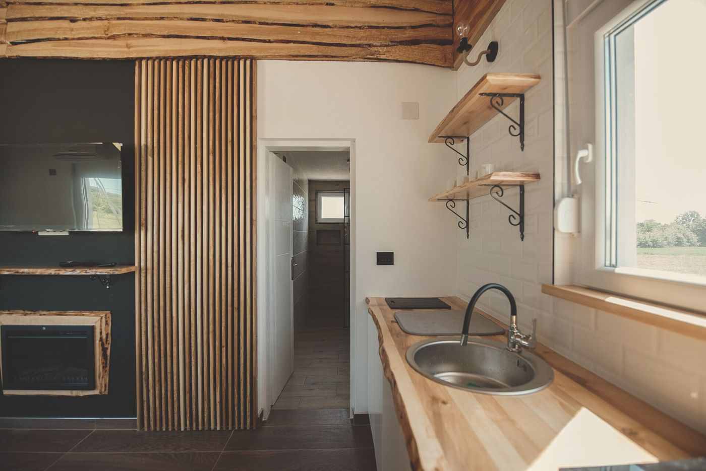
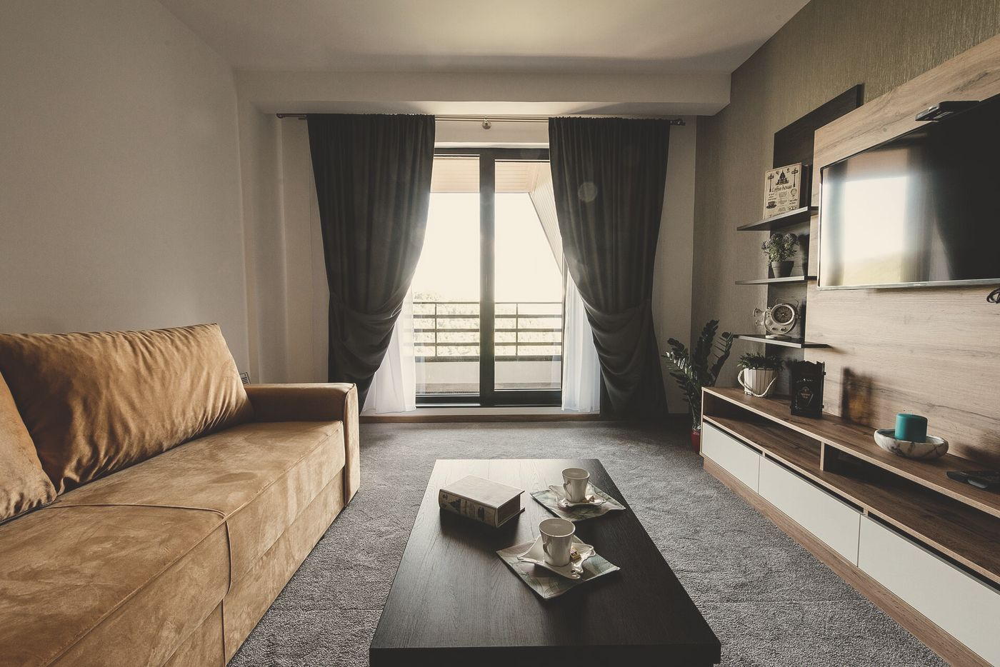
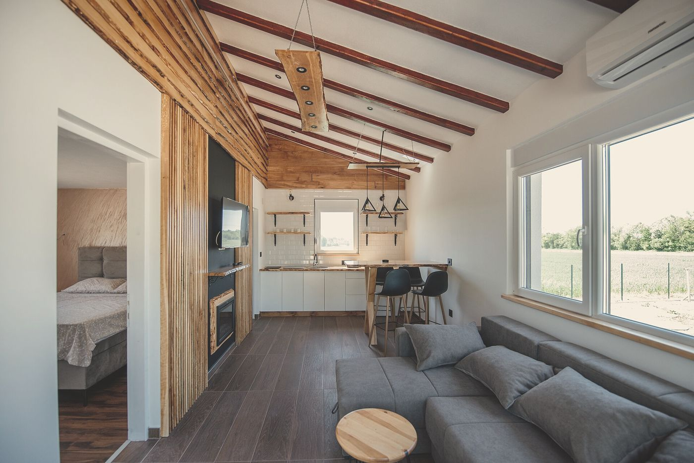
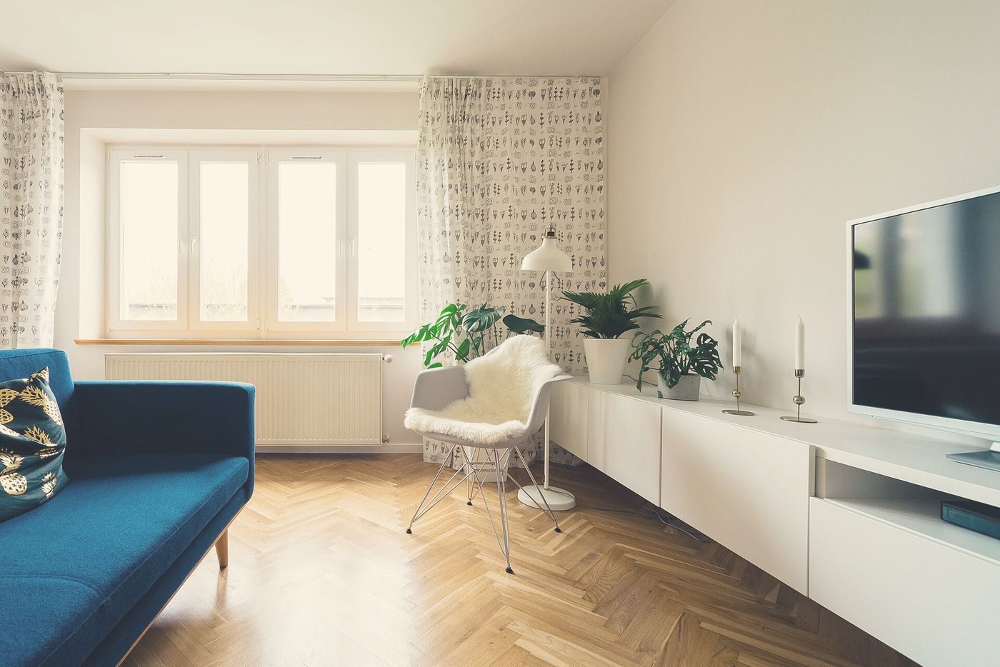
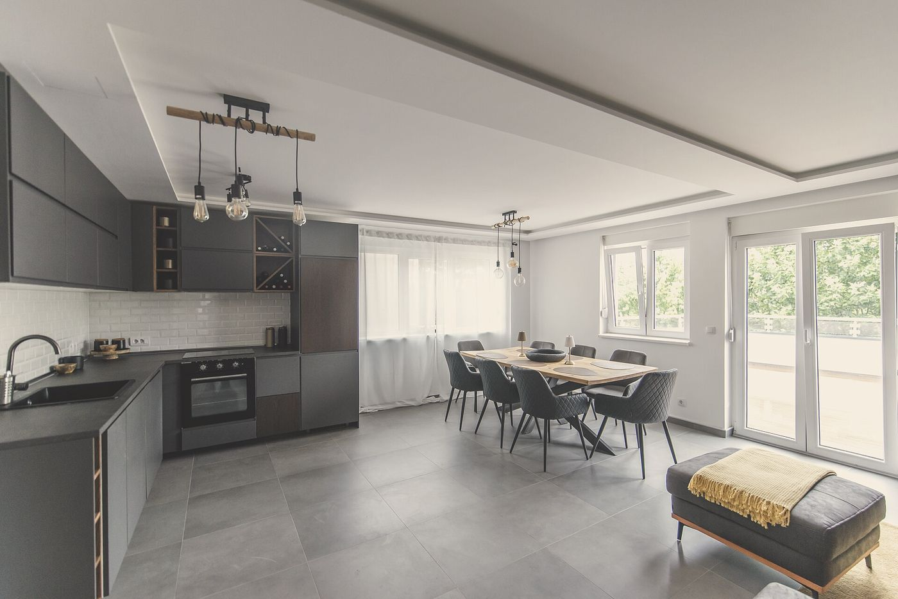

Minh bạch cả hình ảnh
Nguồn ảnh & giấy phép
Mọi ảnh không gian trên HomeVal lấy từ Wikimedia Commons theo giấy phép cho phép dùng lại: CC0 (không cần ghi công) hoặc Creative Commons Attribution (cần ghi tác giả, giấy phép và thay đổi). Ảnh chỉ để minh họa không gian sống, không phải tài sản đang rao bán và không liên quan đến số liệu định giá.









Danh sách máy đọc được: img/photos/credits.json. Giấy phép được kiểm tra qua API của Wikimedia Commons khi tải ảnh.